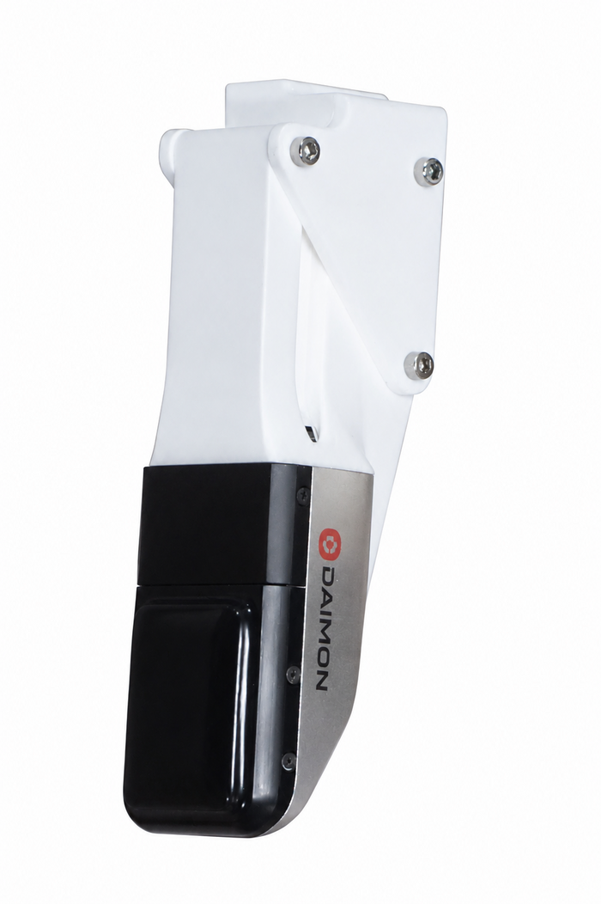
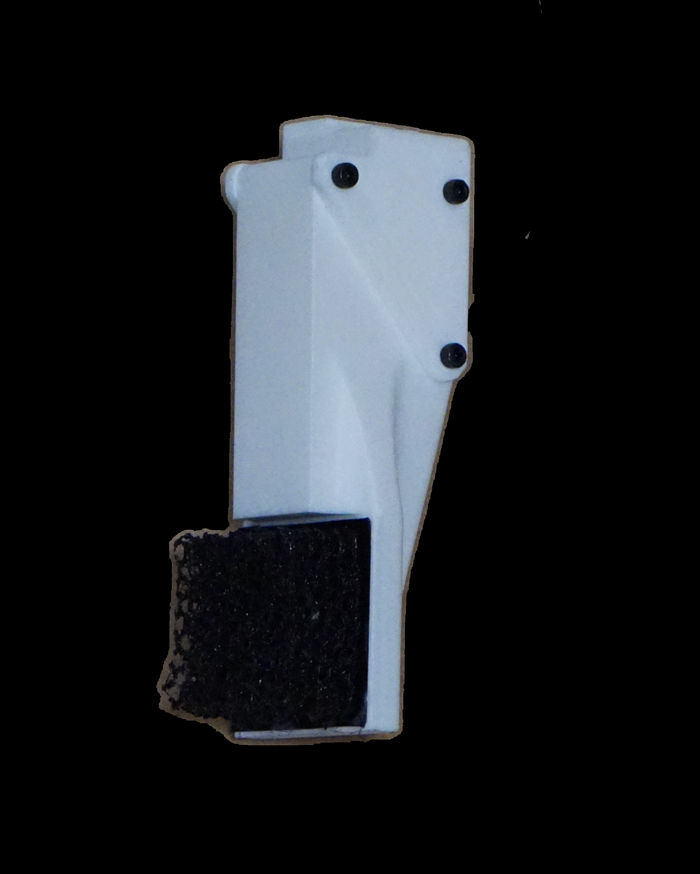
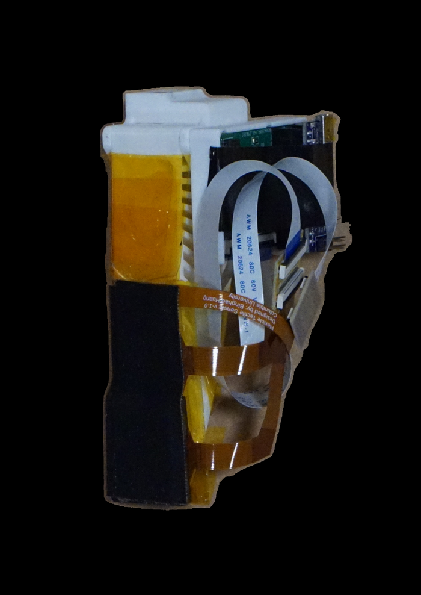
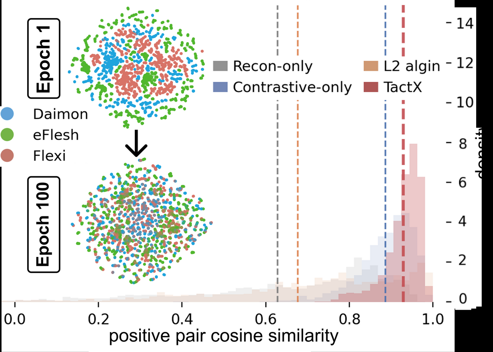

Pick-and-place
video slot
Task Videos
Cross-Sensor Manipulation Tasks
Plug insertion
video slot
Board wiping
video slot
Object reorientation
video slot
TACT X is evaluated on contact-rich manipulation tasks where tactile feedback matters: precise placement, insertion under contact, surface wiping, and object reorientation.
Abstract
Sensor-Agnostic Touch
Tactile sensors provide critical information for contact-rich manipulation, yet tactile representations and policies remain tightly coupled to each specific sensor, limiting transferability across robots and hardware platforms. We propose TACT X, a framework for learning a transferable tactile representation across sensors spanning three fundamentally different transduction modalities: resistive, magnetic, and vision-based. TACT X maps heterogeneous tactile observations into a shared latent space through modality-specific encoders trained on paired contact data. Such paired interactions provide a natural alignment signal across modalities, and the encoders are jointly trained across all sensor pairs, inducing a three-way-consistent latent space. Our experiments show that TACT X aligns tactile representations across sensors while preserving object-level contact information through sensor prediction and object classification on the learned latent space. We evaluate TACT X on four contact-rich manipulation tasks: pick-and-place, plug insertion, board wiping, and object reorientation. Policies trained with one sensor transfer zero-shot to physically distinct sensors through the shared latent, yielding approximately 20% higher success than vision-only transfer baselines.
3sensor modalities
16-Dshared latent
4robot tasks
∼20%transfer gain
Data Collection
Paired Contacts Across Heterogeneous Sensors
TACT X trains from simultaneous paired contact observations. Two tactile sensors are mounted on opposing fingers of a parallel-jaw gripper and record the same physical contact event through different sensing mechanisms. Pairwise datasets are collected for Daimon, eFlesh, and FlexiTac, with left/right sensor swaps to reduce mounting bias.
The pretraining set uses 10 3D-printed objects spanning point, edge, and area contacts. Scripted approach, contact, stable-grasp, release, and withdraw phases produce aligned tactile frames for all sensor pairs.

vision-based

magnetic

resistive
Method
Pairwise Training, One Shared Latent
Each sensor has its own encoder and decoder. Encoders map native tactile observations into a shared posterior over a 16-D latent space; decoders reconstruct each modality from that latent. During training, paired observations are pulled together with an InfoNCE alignment loss while self- and cross-reconstruction preserve contact geometry.
Because each trajectory contains only two sensors at a time, minibatches draw balanced samples from every pair-dataset. The result is a globally consistent tactile space induced from pairwise supervision alone.
Alignpaired contacts from different sensors
Preservecontact structure via self- and cross-reconstruction
TransferACT policies through the shared tactile interface

Open Release
100% Open
To support further research on sensor-agnostic tactile learning and cross-sensor manipulation, we release the following:
TACT X Dataset
Paired contact data across Daimon, eFlesh, and FlexiTac, collected with 10 objects and left/right-swapped sensor-pair configurations.
Code
Training and evaluation code for shared tactile representation learning, reconstruction, alignment, and ACT policy transfer.
Model Checkpoints
Pretrained TACT X encoders and decoders, plus checkpoints for tactile-conditioned manipulation experiments.
Paper
TACT X
TACT X: Learning Shared Tactile Representations Across Diverse Sensors
Anonymous Authors
CoRL 2026 Submission
16 pages
Citation
BibTeX
If you find our work useful, please consider citing the paper as follows:
@misc{Anonymous2026TACTX,
title={TACT X: Learning Shared Tactile Representations Across Diverse Sensors},
author={Anonymous Authors},
booktitle={Conference on Robot Learning (Submission)},
year={2026}
}